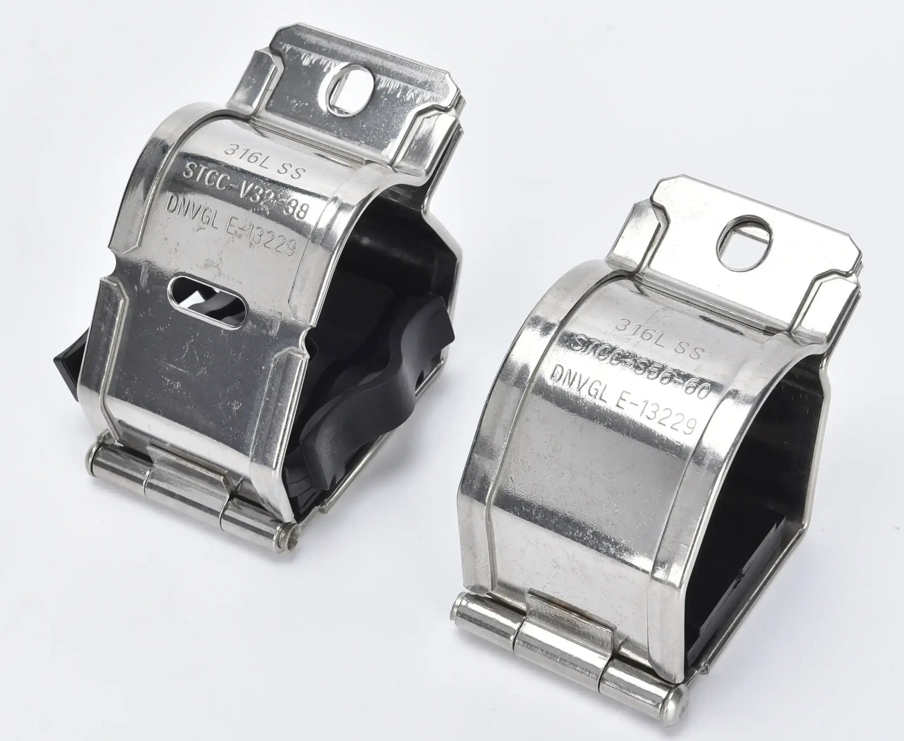

Cable Cleat Spacing Guide: Standard Distance & Calculation

One of the most common questions electrical engineers ask when specifying cable cleats is: "How far apart should they be?" The correct cable cleat spacing depends on cable size, voltage level, short-circuit rating, and installation environment. This guide covers standard spacing practices, IEC 61914 requirements, and practical calculation methods.
Why Does Cable Cleat Spacing Matter?
During a short-circuit fault, cables experience enormous electromagnetic forces. If cleats are spaced too far apart, cables can swing, damage insulation, or even cause failure. Correct spacing ensures:
1. Short-circuit withstand: Cleats restrain cable movement during fault currents
2. Mechanical support: Prevents cable sag under weight
3. Thermal expansion: Allows controlled movement during temperature changes
Standard Spacing Guidelines
While exact spacing should be calculated for each project, the following general guidelines apply:
Low Voltage Cables (up to 1kV)
- Single core cables: 600–1000 mm
- Multi-core cables: 800–1200 mm
- Control cables: 1000–1500 mm
Medium Voltage Cables (1kV–36kV)
- Single core cables: 400–800 mm
- Trefoil arrangement: 300–600 mm
- Critical: Shorter spacing for higher short-circuit levels
High Voltage Cables (36kV+)
- Typically 300–500 mm
- Trefoil or flat formation required
- Must be calculated using short-circuit force formulas
How to Calculate Minimum Spacing
The maximum spacing between cable cleats is determined by the short-circuit current and the force it generates. IEC 61914 provides a calculation method:
Key formula factors:
1. Short-circuit current (Isc) in kA
2. Cable center-to-center distance (d) in mm
3. Cable conductor cross-section (A) in mm²
4. Duration of short-circuit fault (t) in seconds
The electromagnetic force between adjacent cables during a fault is proportional to Isc² / d. Higher fault currents require closer cleat spacing.
IEC 61914 Spacing Requirements
IEC 61914 (Cable cleats for electrical installations) specifies that cable cleats must be:
1. Tested to withstand the declared short-circuit current
2. Installed at spacing not exceeding the manufacturer's recommended maximum
3. Able to restrain cables without damage during fault conditions
Cleats certified to IEC 61914 have passed short-circuit testing at declared currents and spacing. Always use cleats with a verified short-circuit rating matching your system.
Practical Spacing Tips
1. End termination spacing: Install a cleat within 300 mm of any cable termination or junction box
2. Vertical runs: Reduce spacing by 50% for vertical cable trays (cable weight adds stress)
3. Bend radii: Install cleats immediately before and after cable bends
4. Vibration areas: Halve spacing near motors, pumps, or other vibrating equipment
5. Outdoor exposure: Use shorter spacing for UV-exposed or temperature-cycled installations
Common Spacing Mistakes
1. Using the same spacing for all cable sizes (larger cables need closer cleats)
2. Ignoring short-circuit level (a 50kA fault needs much closer spacing than 10kA)
3. Overlooking vertical runs (cable weight adds significant load)
4. Not spacing near terminations (cable ends are the most stress-prone points)
Need Help With Your Cable Cleat Spacing?
JJW Electric provides technical support for cable cleat selection, including spacing calculations based on your system's short-circuit levels. Our cleats are certified to IEC 61914 and available for single, trefoil, and double cable arrangements.
Need cable cleat specifications or spacing calculations? Contact JJW Electric.
Contact Us ← Back to News